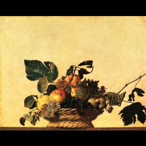

関連リンク
カラヴァッジョ
聖母の死
慈悲の七つのおこない
フセーペ・デ・リベーラ
果物籠のある静物
コルネリス・ド・ヘーム
ヘーラルト・ダウ
シャボン玉を吹く少年と静物
マンモス
メタセコイア
ニッコウキスゲ
バロック絵画最大の巨匠カラヴァッジョによる静物描写の頂点を示す代表作『果物籠』。
若き修行時代の頃から写実的描写力を開花させていたカラヴァッジョの恐るべき才能を
存分に示す本作は、それまで幾多の画家が描いてきた瑞々しく美しい果物の描写のみ
ならず、枯れ朽ちる葉や腐敗する果実など、醜さや下劣とされる描写まで、徹底した
リアリズムを以って現実を描いている。
これは若きカラヴァッジョから晩年にまで生涯貫かれる写実による現実描写の表れであり、
後世に多大な影響を与えることになる画家の類稀な才能を示す最良の作例のひとつである。
シーンと乾いた空気、超現実的なカラリとした光の中、この、おそらく世界で一番美しい
果物籠は、実は、カラヴァッジオ唯一の静物画なのです。
そして、静物画という全く新しいジャンルへの道を拓いた、記念すべき作品でもあります。
秋の豊かな果物たちは、今にも水滴がしたたるほどにみずみずしく、ここまで精緻に
描ききる画家の力量には目まいを覚えるほどです。
しかし、さらに目を凝らすと、リンゴは傷みかけ、ブドウの葉には虫喰いの跡が目立ちます。
すでにしおれかけた葉もあり、これが決して新鮮この上ない果物たちではないことに気づきます。
画家があえて、こうした素材を選んだには、わけがあったのでしょう。
徹底したリアリズムが身上のカラヴァッジオだからこそ、朽ち果てようとする果物たちを
描くことに強い意欲を持ったのかもしれません。16～17世紀の静物画においては、しばしば
「ヴァニタス」…「現世のはかなさ」という寓意を持たせました。したがって、この作品でも
果物に仮託して、人生や快楽のもろさ、虚しさを表現しているのだと言われています。
また、果実を盛り付けたシンプルな籠の美しさに、私たちは果物たち以上に驚嘆させられます。
台から少しはみ出しているように見えることで、より現実感が増しますが、一方で、やや
危なげな印象もあり、これもまたヴァニタスなのかもしれません。
この清らかな籠はそれだけで十分に作品の主役であり、画家の手によって、世界の中心たる
存在となっているのです。
カラヴァッジオ(1571－1610年)は本名をミケランジェロ・メリージといい、若いころに
ロンバルディア地方で修業し、純粋な写実主義の伝統を確実に継承したと言われています。
その後、1590年ごろにローマに移り住み、カヴァリエール・ダルピーノの工房で共同制作に
従事し、この時期、花や果物を専門的に描いています。このことは、イタリアにおける
静物画というジャンルの発展に大きく貢献するものでした。
その激しい性格から、数多くの暴力事件を起こし、果ては殺人を犯して逃亡者となり、
スペイン領ポルト・エルコレで悲惨な死を遂げるカラヴァッジオですが、彼の中に共存する
聖と俗、光と影の劇的なコントラストは、時として、このように他に類を見ないほど偉大で、
清らかな世界もまた描き出してみせたのです。